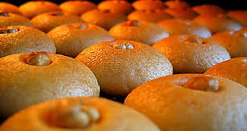

Şekerpare
Tarif; tam, klasik bir şekerpare. Hani şu sadece bayramlarda, büyüklerimizin yapabildiği türden.Malzemeleri de; haliyle klasik, bol margarinli.
Tarifin en önemli püf noktası; tatlının çok sıcak, şerbetinin ise soğuğa yakın ılık olması. Ben önce şerbeti pişiriyor, sonra tatlıyı hazırlamaya başlıyorum. Böylelikle, hazırlanma ve pişme süresinde, şerbette yeterli ılıklığa gelmiş oluyor.
Malzemeler (ortalama 45 adet)
- Hamuru için;
- 250 gr.(1 paket) margarin
- 1 çay bardağı sıvı yağ
- 8 yemek kaşığı (silme) pudra şekeri
- 2 adet yumurta (birinin sarısı üzeri için ayrılacak
- 4 yemek kaşığı (tepeleme) irmik
- 4-5 su bardağı (ortalama) un
- 1 tutam tuz
- 1 paket kabartma tozu
- 1 paket vanilya
- Şerbeti için;
- 5 su bardağı toz şeker
- 4 su bardağı su
- 1/2 (yarım) limon suyu
Yapılışı
Öncelikle şerbeti hazırlayalım.
- Su ve şekeri bir tencereye koyun ve orta ateşte kaynayana kadar sürekli karıştırın.
- Şeker eriyip, karışım kaynamaya başlayınca karıştırmayı bırakın ve kısık ateşte 10 dk. kaynatın.
- Limon suyunu ekleyin ve 3-4 dk. daha kaynatın.
- Ocağı kapatıp, şerbeti ılınmaya bırakın.
Şerbet ılınırken, hamuru hazırlamaya başlayalım.
- Margarini oda sıcaklığında iyice yumuşatın.
- Yumuşak margarini ve pudra şekerini çırpma teli ile krema kıvamına gelinceye kadar çırpın.
- Sıvıyağ, bir yumurta ve bir yumurta akını ekleyip, biraz daha çırpın.
- 2 su bardağı kadar un ve diğer malzemeleri de ekleyip, yoğurmaya başlayın.
- Azar azar un eklemeye devam ederek, oldukça yumuşak ele yapışmayan bir hamur yoğurun. Vaktiniz var ise hamuru buzdolabında yarım saat kadar dinlendirin.
- Hamura ister yuvarlak, ister elips şekli vererek tepsiye dizin (tepsiyi yağlamanıza gerek yok).
- Üzerlerine biraz yağ ile incelttiğiniz yumurta sarısını sürün.
- İsterseniz üzerlerine birer fındık ya da ceviz koyun ya da sadece çatalla çizikler yapın.
- 180 derecede önceden 15-20 dk. kadar ısıttığınız fırında, ortalama 25-30 dk. üzerleri ve altı kızarana kadar pişirin.
- Şekerpareler fırından çıkar çıkmaz, hiç beklemeden üzerine soğuk-ılık şerbeti gezdirin ve şerbetini çekene kadar bekleyin.
Şerbetini çektikten sonra servis edebilirsiniz. Afiyet olsun.